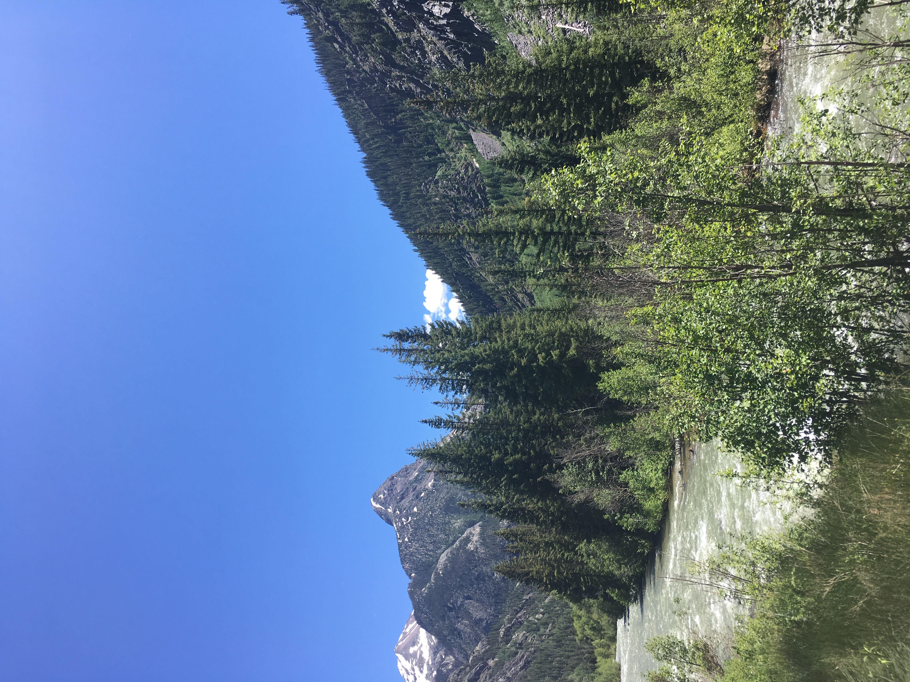
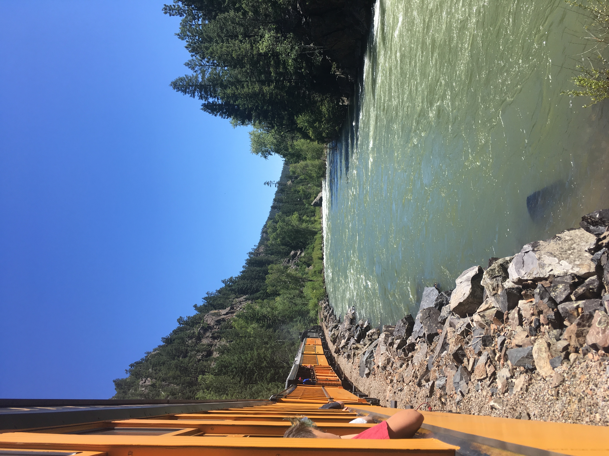
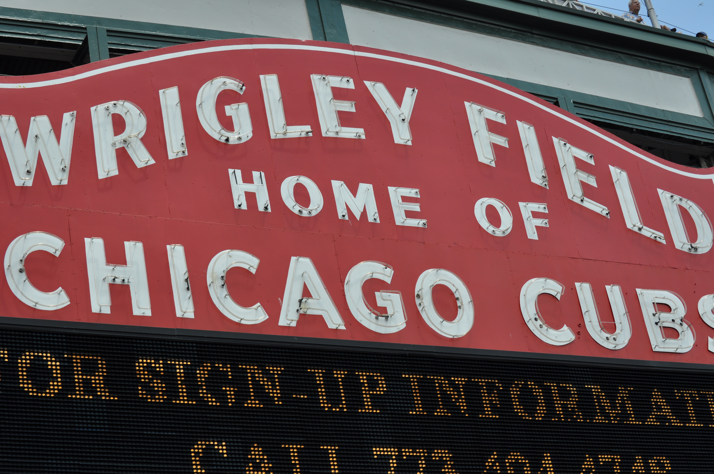
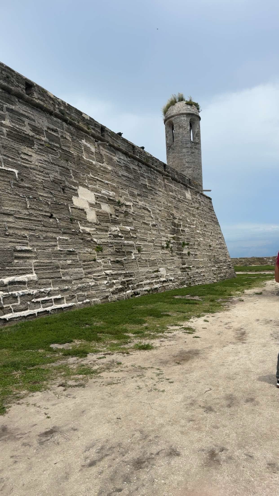
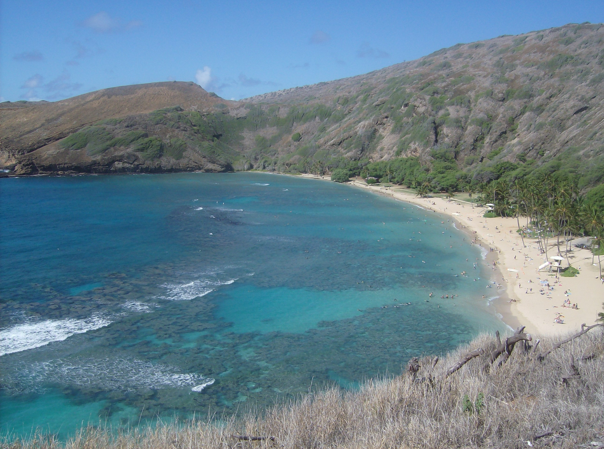
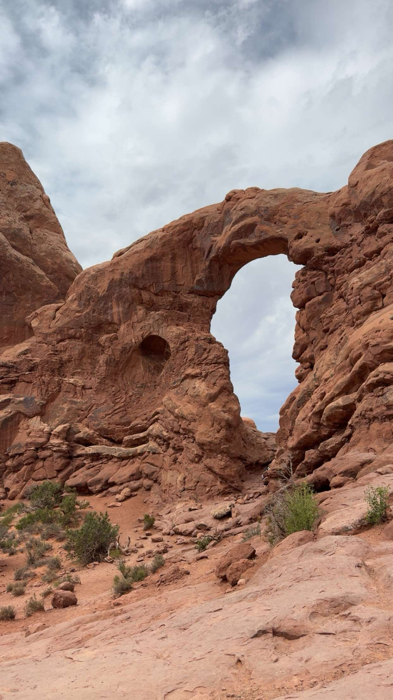

Pictures
Colorado Visit
Colorado – Animas River

Colorado – Durango & Silverton Railway

Chicago Visit
Chicago – Wrigley Field

Chicago – Lighthouse from Navy Pier

Florida Visit
Florida – Castillo de San Marcos

Florida – Cathedral Basilica of St. Augustine

Hawaii Visit
Hawaii – Giant Sea Turtle

Hawaii – Hanauma Bay

Hawaii – USS Arizona Memorial

England Visit
England – Stonehenge

England – Royal Palace London

Oregon Visit
Oregon – Multnomah Falls

Utah Visit
Utah – Arch by Highway

Utah – Arches National Park

Louisiana Visit
Louisiana – New Orleans
Louisiana – St. Louis Cathedral